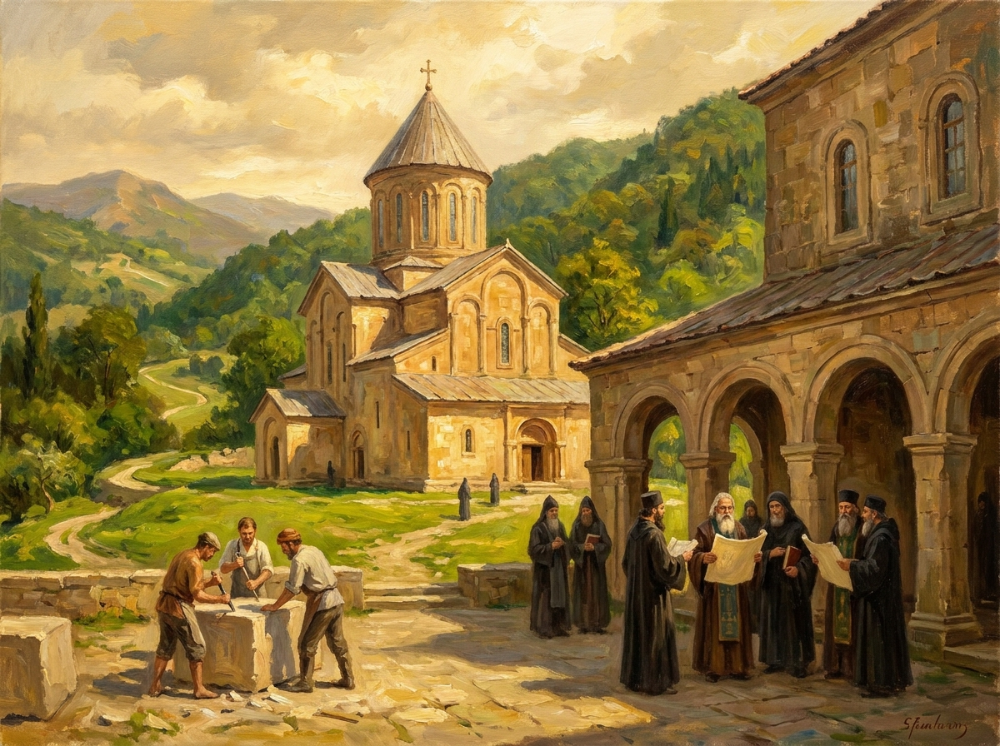

მეფე-მეცნიერი
დავითი არა მხოლოდ სარდალი და რეფორმატორი იყო — ის განათლების მფარველი და ღრმად პიროვნული სულიერი პოეზიის ავტორი გახლდათ.

გელათის აკადემია
ქუთაისთან, დავითის ბრძანებით დაარსდა გელათის მონასტერი და მასთან არსებული აკადემია — ეპოქის ერთ-ერთი უმნიშვნელოვანესი სამეცნიერო-საგანმანათლებლო ცენტრი მართლმადიდებლურ სამყაროში.
გელათში ვითარდებოდა ნეოპლატონური ფილოსოფია, ღვთისმეტყველება, რიტორიკა და საბუნებისმეტყველო მეცნიერებები; მიმდინარეობდა ბერძნული ტექსტების თარგმნა და გადამუშავება. აკადემია მალევე იქცა „მეორე იერუსალიმად" წოდებული კულტურული აღორძინების ცენტრად, სადაც ქართველი მოღვაწეები ბიზანტიური და ანტიკური მემკვიდრეობის თანაბარუფლებიან შემსწავლელებად გვევლინებოდნენ.
„გალობანი სინანულისანი"
დავითის ერთადერთი ცნობილი ლიტერატურული ნაწარმოები — სულიერი პოეზიის კრებული, რომელშიც მეფე ღვთის წინაშე საკუთარ სისუსტეებზე საუბრობს.
მეფე, რომელიც საჯაროდ ინანიებდა
„გალობანი სინანულისანი" (სინანულის საგალობლები) იშვიათი ტექსტია შუა საუკუნეების მონარქთა შემოქმედებაში — მასში ძლევამოსილი მეფე თავს „ცოდვილთა შორის პირველად" მოიხსენიებს და ღრმა თავმდაბლობით მიმართავს ღმერთს. ეს ნაწარმოები დღემდე ითვლება ქართული სასულიერო პოეზიის ერთ-ერთ უმაღლეს ნიმუშად და აჩვენებს დავითის, როგორც პიროვნების, კომპლექსურ სულიერ სამყაროს — სახელმწიფოებრივი სიმტკიცისა და პირადი თავმდაბლობის იშვიათ შერწყმას.
ფილოსოფია
ნეოპლატონური სკოლის განვითარება გელათში, იოანე პეტრიწის თარგმანებითა და კომენტარებით.
საერთაშორისო კავშირები
გელათის მეცნიერები აქტიურად თანამშრომლობდნენ ბიზანტიურ სამეცნიერო წრეებთან.
მემკვიდრეობა
გელათის კომპლექსი დღემდე შედის იუნესკოს მსოფლიო მემკვიდრეობის ძეგლთა სიაში.